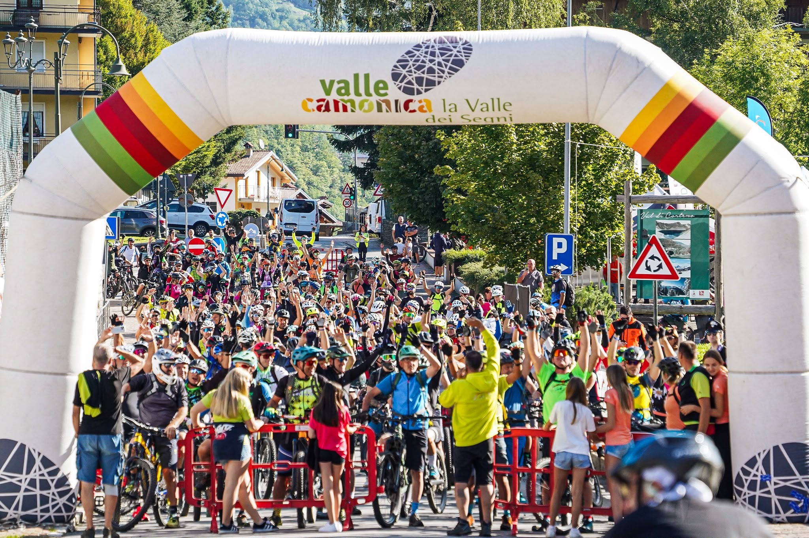
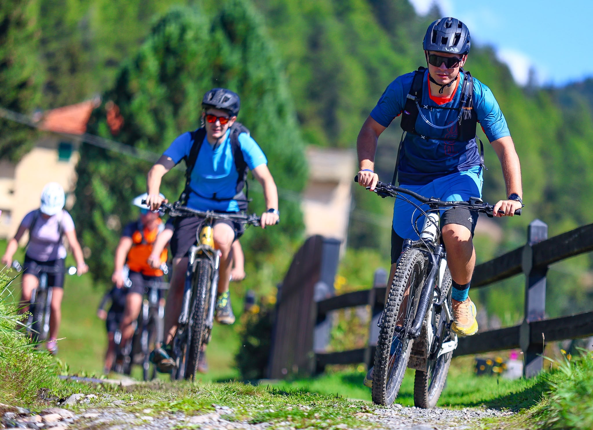

Mountain-bike and e-bike riders gathered in Corteno Golgi on Saturday, 12 September, for the second Valdicorteno Bike Experience, a day built around riding, landscape and community in the mountains of Valle Camonica.
Organised by Pro Loco Corteno Golgi, the event started and finished at the San Martino Sports Centre. It was staged as a non-competitive open excursion, placing discovery of the Val di Corteno ahead of race positions or finishing times.

Two routes through Alpine terrain
Both routes left together at 10:00. The 26 km short course included 830 metres of climbing, while the 45 km long course climbed 1,450 metres. The opening 17.5 km were shared before riders selected their route.
Secondary roads, gravel tracks, mule paths and mountain trails shaped the ride. Four refreshment points placed local products along the course, connecting the sporting programme with the landscape and food culture of the valley.

A cycling day for different generations
The programme also included the new Mini VBE for riders aged eight to 14, with a guided loop and skills session designed to introduce younger participants to mountain biking in a controlled setting.
Together, the adult routes, Mini VBE and Bike Village turned the event into a broader cycling gathering—one that used the bicycle as a way to experience Corteno Golgi and its surrounding Alpine landscape.
Image Media coverage
Photography: Giorgia Donato, Eduardo Castro and Leandro Rocha / Image Media
Event details checked against the official Valdicorteno Bike Experience programme and regulations.